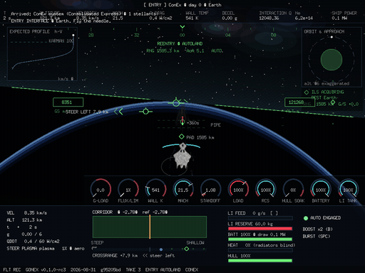
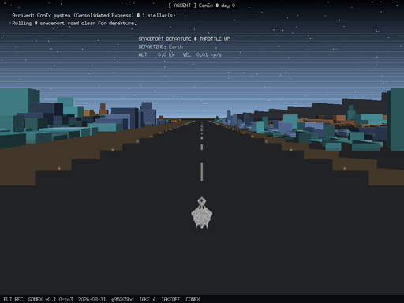
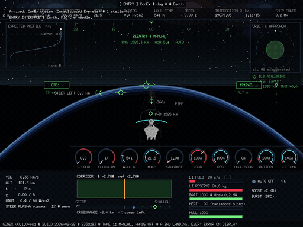

> THE GROUP FORMERLY KNOWN AS THE OUTSIDERS
Alaska had too many children and not enough school. The solution was portables — plywood boxes on blocks, parked in the snow outside the building that was already full. We were the kids in them. Our core rooms rotated between those arctic portables, and the building called us what we were: the Outsiders. Not a nickname anyone chose. A location.
Getting there was its own long instrument. I was the last stop on a long bus ride, to a place that was not a city and not even outside a city — the buses still delivered kids to postboxes. Postboxes were snow-powered waiting areas. Chains on the wheels. A flashing white light on the roof. Sparkling strobes of white thrown against falling snow, and ice grown thick on the windows in the back of the bus, where you scratched a hole with a fingernail to see whether your stop had arrived yet.
> THE NAMING CONTEST
The next year, they split the Outsiders into teams and let us rename our own home rooms. This was not cosmetic. A team name meant the teachers on that team shared subjects across the same core students — the name was the roster, the schedule, the people you'd have for a year. So the contest ran for a week, and the students made it into a war of insignia and icons. Everyone was drawing crests in the margins.
I had Infini-D. Actual 3D sculpting software, on an actual Mac, in the middle of a middle-school popularity contest. So while other teams drew, I rendered. My team's name was the Yodacons, and the Yodacon became a ship — modeled, lit, and rendered as promotional material for a home room.
It came down to two names on the board: the Yodacons, or the Tauruses. The students argued for a week. Then the teachers' vote shifted the final verdict, and the outside-portable core group was given its new title: Taurus.
The losers were never winners. That is the sad beginning of the Yodacon name.
> RED AND WHITE CHESS PIECES
The Yodacons lost the name and kept the room. We got a drama-based leader and the lesson plan continued. The advanced classes were for the Outsiders — for the other ones, the inside ones — so we did algebra and calculus with red and white chess pieces, working the same problems by different methods, for fun, because don't get left behind was the whole curriculum underneath the curriculum. That is what the losing team did with a year: it kept doing the math anyway, and it enjoyed it.
> GIVING THE SHIP A PURPOSE
But the ship existed. A 3D-rendered starship, built by a fourteen-year-old for a home room that never got the name, cannot be left to have been done in vain. So we give it a purpose. This organization is the revival: the Yodacon flies again, out of the old ConEx Escape Velocity references, out of a meme, a personal story, a moment in time preserved by a popularity contest in a child's life.
Yodacon.org is the crew of shipmates on the Yodacon. Our intention is to expand upon the original game — to take the ship out of a lost vote and put it back into a universe where it can actually be flown, traded, refueled, and landed. Everything here is MIT licensed, because the whole point is that it belongs to the people who show up for it.
> CONEX — WHERE THE YODACON IS DOCKED
ConEx is Paul Richeson's plugin for Ambrosia's Escape Velocity, and it is where the Yodacon was published into the archives. ConEx 1.2 shipped 10 new ships for a government called Consolidated Express, 11 systems, and 35 linked missions that teach you how to fly — with instructions to be sure to land on Conex, Exeon, and Cenron, because their backgrounds will amaze you. It was posted in December 1999. It has been downloaded a few thousand times by people who are no longer fourteen. 🔥
We have the original archive. The work is to open it, pull the resources out into individual files, fix what 1999 left broken, and get the result hosted where people can still play it.
> TEAM YODACON — THE GAME
Team Yodacon is a space commodity trading game. Its signature system is the landing. We use lithium-injected pellets, cooked with lasers and X-ray emitters, to create rotating comforting pillows of glide — a steerable plasma envelope that shapes your atmospheric reentry trajectory. The real physics of reentry heating drives the controls, and those controls are integral to the landing process. You do not press "land." You fly it down.
Then: set the bird down safely at the station dock. Refuel. Walk the outfitters and dream about upgrades, or about a different ship entirely. Or get a drink at the bar and be distracted there, waiting on the mini-games — the charisma ladder, the Royal Finkel table — while the winners process runs the way the EV Bible explains it.
The Game As It Stands
Every screen you can reach, photographed at seed 20260922. The zero-sum economy drawn as flow charts. The reentry physics explained. And an honest list of what still has no art.
Thirty materials, seventeen industries, 109 ports trading while nobody is looking — under one law: every ton was put in the ground at genesis and can only move. Mass and credits are audited every day and have never once failed to balance.


> FLIGHT RECORDER — REENTRY AND TAKEOFF
This is not concept art. This is the flight recorder from the released Gonex v0.1a3 build, playing one landing at ConEx station in a single take: the plasma pillow burning on the Yodacon's own 1997 mask, the solar-prominence fan arched over the bow wave, the oncoming ion flow streaming off the horizon as real particles, the corridor flown on the green HUD — then the spaceport metropolis slides in over the horizon at exactly the speed on the tape, the flight computer calls "in the pipe, five by five," captures the ILS glideslope, and sets her down on the landing road between the cities. No cuts. The airframe is the original Yodacon, byte-exact from ConEx 1.2; the descent is the seed-grown port and the MHD envelope model, end to end.

And this is the trip back up — the landing run backwards, and quicker. Roll down the spaceport road like an airport runway, rotate over the town, and punch up through the same fire you came down through: the ascent sheath lights at the top of the thick air, the prominence fan and the ion flow run the other way, the sky bands fall from powder blue through indigo to black, and twelve seconds after throttle-up the flight computer calls orbital insertion. The lanes are yours.

And this is the corridor flown badly on purpose — hands off the stick the whole way down. Watch the guidance fight for the pilot: HULL BURNING with the live rate, TOO STEEP — EASE THE NOSE UP, the STEER LEFT chevrons counting eight kilometres of crossrange, the guardian dumping seed reserves, the emergency override taking the stick, and a debrief that signs for all of it. Every recording keeps its provenance burned into the frame: version, build date, commit, take. The full ledger lives in assets/RECORDINGS.md.

> SIX STAGES ON INSTRUMENTS — THE PHYSICS, FLOWN
The landing got its flight manual. The MHD reentry console — the envelope-model prototype behind the plasma pillow — proves the descent as six numerical-flow tabs: CONCEPT, FLOW, HEATING, PLASMA, SHIELD, POWER. All six now ride the Gonex cockpit: the trajectory is classified live into six stages, each stage rings the gauges that matter, and the console's algebra is typeset onto the black of the sky itself — real subscripts, radicals and Greek, recomputed from the simulation every frame, touring tab by tab on the way down. A seed-economy advisor solves the model backwards for the least lithium that holds the heat line: optimal fuel, minimal hull, one green caret on the feed gauge.


The full writeup walks every tab — the equation, the substitution with live numbers, and what it means with a stick in your hand — with captures of each one on the sky: Six Stages on Instruments.
> THE COURIER UNIVERSE
Ours is a world parallel to the EV universes, and it diverges on one word. The other universes were settled by pirates and warriors — raiders with a hold full of stolen ore, fleets with a flag and a grievance. Ours was settled by commodity. The first thing that ever crossed our sky in numbers was not a gunship. It was freight, on a schedule, with a manifest.
The ConEx government is what a civilization becomes when it commercializes and commoditizes its own freight. Consolidated Express is not an empire and not a guild; it is the clearing house, the bonded lane, the ledger everyone agreed to trust because the alternative was every captain inventing their own. Its power is not that it can shoot you. Its power is that it can decline to sign for your cargo.
So the hero of this universe is a courier. Hard-working space captains, running lanes on thin margins, carrying other people's goods through their own atmosphere. There is no chosen one. There is a bill of lading, a burn window, and a landing you have to fly yourself. The heroism is in the delivery — and in the long mission underneath every delivery, which is to earn your way up the hulls until you can take the master ship.
> THE MASTER SHIP
The Yodacon is the top of that ladder. The full monty: mounted rotating turrets on every arc, vast cargo hulls, and a reentry envelope rated for speeds no courier hull before it survived. It is not a warship that happens to carry cargo. It is a freighter that refuses to be caught — turrets because a full hold attracts attention, not because the captain came looking for a fight.
Its real distinction is the reentry. Every other hull in the lane has to bleed velocity in the black before it dares touch air. The Yodacon brings the speed down with it, riding the lithium-plasma envelope through the heating regime that breaks lesser frames. That is the whole economic argument for the ship: a courier who can enter fast enough delivers on windows nobody else can bid on. Speed of reentry is the commodity. The cargo is just what pays for it.
You do not buy the Yodacon. You are sent out after it. The campaign is the hero's mission of an ordinary captain — one contract at a time, one landing at a time — until the master ship is yours and the lane belongs to a courier.
> FOUNDING RECORD
27 August 2026. On this day the domain yodacon.org was acquired, the Yodacon GitHub organization was created, and DNS was cut over to GitHub Pages — apex A and AAAA records to the four GitHub Pages addresses each, a CNAME on www to the organization's Pages host, and the _github-pages-challenge TXT record for domain verification.
The same day, the ConEx lore was revived and expanded from a 1999 Escape Velocity plugin into what it is now: space reentry and space commerce. Not pirate. Not warrior. Courier.
ARCHIVE & TOOLING RESOURCES
- Cythera Guides — Ambrosia EV add-on archive (ConEx12.sit, ConEx12u.sit)
- vasi/evnova-utils — Nova-side resource tooling; near-identical shape to what EV needs
- andrews05/EV-Nova-CE releases
- escape-velocity.games tools mirror
- The Nova Bible — resource formats, mission bits, the winners process
- systemless.org — Escape Velocity Override (target host for a fixed-up ConEx)
- r/evnova — Ambrosia and registration
- Reference: building a plugin like a 14-year-old would